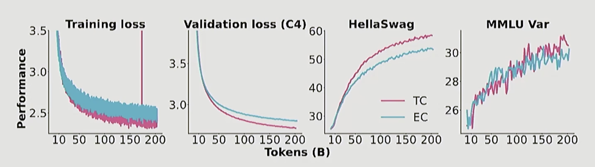
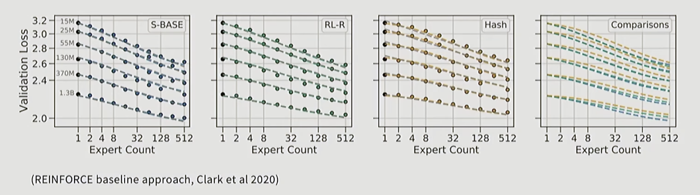

Mixture of Experts
What’s MOE ?
Main intuition: replace big feedforward with many feedforward networks and a selector layer. Many papers have shown that given the same FLOP, more parameters leads to better performance. MOEs are also faster to train.
BUT the system complexity to train MOEs is high.
MOEs give us another way to parallelize training. It is parallelizable to many devices (aka expert parallelism)
- Training objectives are somewhat heuristic (and unstable).
MOE Variations
Routing function
Routing algorithms:
token chooses expert: choose top-K experts for each token
expert chooses token: each expert chooses top-K tokens
global routing via optimization: solve a global optimization problem to find the best routing.
Almost all MOEs boils down to choose “\(\text{top}-K\)”.

Expert sizes
Training objectives
Top-K Routing
Most papers do the old and classic top-k routing. How does this work?
Gating
\[ \mathbf{h}_t^l = \sum_{i=1}^{N} \left( g_{i,t} \text{FFN}_i \left( \mathbf{u}_t^l \right) \right) + \mathbf{u}_t^l, \]
\[ g_{i,t} = \begin{cases} s_{i,t}, & s_{i,t} \in \text{Topk}(\{s_{j,t}|1 \leq j \leq N\}, K), \\ 0, & \text{otherwise}, \end{cases} \]
\[ s_{i,t} = \text{Softmax}_i \left( \mathbf{u}_t^{lT} \mathbf{e}_i^l \right), \]
Gates selected by a logistic regressor
This is the DeepSeek (V1-2) router (Grok, Qwen do this too)
Mixtral, DBRX, DeepSeek v3 softmaxes after the TopK
Training MoEs
We need sparsity for training-time efficiency, but sparse gating decisions are not differentiable.
Potential solutions:
Reinforcement learning to optimize gatin policies
Stochastic pertubations
Heuristic-balancing losses
RL for MoEs
RL via REINFORCE, but not so much better.

Stochastic approximations
\[G(x) = Softmax(KeepTopK(H(x), k))\]
\[H(x)_i = (x \cdot W_g)_i + StandardNormal() \cdot Softplus((x \cdot W_{noise})_i)\]
\[KeepTopK(v, k)_i = \begin{cases} v_i & \text{if } v_i \text{ is in the top } k \text{ elements of } v. \\ -\infty & \text{otherwise.} \end{cases}\]
From Shazeer et al 2017 - routing decisions are stochastic with gaussian perturbations.
- This naturally leads to experts that are a bit more robust.
- The softmax means that the model learns how to rank K experts
Further Reading
- Fedus et al. 2022